1Introduzione
Mancano 452 valori nei file di dati e 21 parti di testo da scrivere (evidenziate in giallo). Le celle gialle con «—» sono dati non ancora raccolti. Questo riquadro sparisce da solo quando tutto è compilato.
ideaBlume è il prototipo di sito di crowdfunding per la ricerca dell'Università di Torino che abbiamo progettato nell'Assignment 2 e reso più accessibile nell'Assignment 3. Finora lo avevamo valutato solo noi: con le euristiche, con le personas e con gli strumenti automatici. In questo lavoro lo abbiamo fatto usare a 8 persone esterne al gruppo, con un test di usabilità «in svendita» nello stile di Steve Krug: poche persone, compiti concreti, pensiero ad alta voce e nessun laboratorio.
Le domande a cui volevamo rispondere sono quattro, una per ciascun percorso chiave del sito:
- Chi arriva sul sito riesce a orientarsi tra le campagne e a confrontarle?
- La pagina di un progetto fa capire come saranno usati i soldi e che cosa succede se l'obiettivo non viene raggiunto?
- La donazione in cinque passi si completa senza errori e senza sorprese sul totale?
- Un ente esterno capisce se e come può proporre un'idea?
Al test abbiamo affiancato un'ispezione dei quattro percorsi, fatta mentre preparavamo i task: li abbiamo eseguiti noi su computer e su telefono, misurando che cosa si vede nella prima schermata, in quale punto compaiono le informazioni decisive e se qualcosa esce dallo schermo. I punti critici trovati sono diventati le ipotesi da verificare nelle sessioni e la base del re-design.
La relazione segue l'ordine del lavoro: metodo (sezione 2), soggetti (3), task (4), risultati quantitativi e qualitativi per utente e per task (5 e 6), questionario e interviste (7), problemi emersi e loro gravità (8), re-design del prototipo (9), limiti dello studio (10).
2Metodologia
2.1 Un test «in svendita»
Abbiamo seguito il metodo descritto da Steve Krug in Don't Make Me Think e Rocket Surgery Made Easy: un test qualitativo, con pochi utenti e pochi mezzi, che non serve a dimostrare che il sito funziona ma a trovare i problemi più gravi e correggerli. Ogni sessione è individuale e dura circa mezz'ora. L'utente riceve un compito alla volta, lo esegue da solo e intanto pensa ad alta voce (think-aloud): dice che cosa guarda, che cosa cerca e che cosa si aspetta.
Al metodo di Krug, che è soprattutto qualitativo, abbiamo affiancato le misure quantitative viste a lezione (efficacia, efficienza e soddisfazione, secondo ISO 9241-11), raccolte per ogni utente e per ogni task.
2.2 Ruoli
In ogni sessione erano presenti due componenti del gruppo. Il facilitatore accoglie l'utente, legge il copione, consegna i task e lo invita a continuare a parlare, senza mai suggerire dove cliccare. L'osservatore cronometra, conta errori, richieste di aiuto e blocchi e trascrive comportamenti e frasi. Ognuno di noi ha condotto due sessioni e ne ha osservate due (tabella 4), così le misure non dipendono da una sola persona.
2.3 Contesto e strumenti
Da completare con i dati reali: dove e quando si sono svolte le sessioni (per esempio «tra il … e il … novembre 2026, in un'aula studio del Dipartimento e a casa di due partecipanti»), quante in presenza e quante da remoto, con quale computer, sistema operativo e browser, e con quale strumento sono stati registrati schermo e voce.
Tutti gli utenti hanno usato la stessa versione del sito: quella consegnata con l'Assignment 3, pubblicata all'indirizzo riportato in copertina e lasciata invariata fino alla fine dell'ultima sessione. Le correzioni sono state fatte su un ramo separato del repository e pubblicate a un indirizzo diverso. Il sito è un prototipo: i progetti sono inventati e il pagamento è simulato; gli utenti hanno usato dati di fantasia forniti da noi.
2.4 Svolgimento di una sessione
| Fase | Durata | Che cosa succede |
|---|---|---|
| Accoglienza | 3 min | Il facilitatore legge il copione: si prova il sito e non la persona, non esistono risposte sbagliate, si chiede di pensare ad alta voce. Consenso informato firmato, poi parte la registrazione. |
| Questionario iniziale | 2 min | Età, occupazione, confidenza con il web, acquisti online, familiarità con il crowdfunding. |
| Prima impressione | 1 min | L'utente guarda la home senza cliccare e dice di chi è il sito e che cosa ci si può fare. Serve ad abituarlo a parlare; non è misurata. |
| Quattro task | 20 min | Un cartoncino alla volta, letto ad alta voce dall'utente; ogni task parte dalla home. Dopo ogni task una domanda sulla facilità percepita (da 1 a 7). |
| Questionario SUS | 3 min | System Usability Scale, 10 affermazioni su scala da 1 a 5. |
| Intervista | 5 min | Cinque domande aperte; risposte alle domande che l'utente aveva fatto durante i task. |
Durante i task il facilitatore poteva dire solo frasi neutre («Che cosa stai pensando?», «Che cosa ti aspetti che succeda?», «Tu che cosa faresti a casa?»). Un solo suggerimento generico era ammesso dopo più di un minuto di blocco e una seconda richiesta di aiuto: in quel caso il task è registrato come completato con aiuto. Il copione, i cartoncini, la scheda dell'osservatore e i questionari sono nell'appendice A e nel file kit/kit_test.pdf.
2.5 Che cosa abbiamo misurato
| Metrica | Dimensione | Regola |
|---|---|---|
| Tempo | Efficienza | Secondi tra la fine della lettura del task ad alta voce e il momento in cui l'utente dice di aver finito (o rinuncia). Si misura con il cronometro o sulla registrazione. |
| Esito | Efficacia | S = completato da solo, con la risposta giusta, entro il tempo limite. A = completato dopo un suggerimento del facilitatore. F = non completato: rinuncia, tempo limite superato oppure risposta sbagliata data come definitiva. |
| Errore | Efficacia | Ogni azione che allontana dall'obiettivo: pagina o link sbagliato, filtro o opzione sbagliata, dato inserito nel campo sbagliato, invio di un modulo con errori di validazione. Passare il mouse, scorrere e leggere non sono errori. |
| Richiesta di aiuto | Efficacia | L'utente chiede in modo esplicito al facilitatore che cosa fare. Si conta anche se il facilitatore risponde solo «Tu che cosa faresti?». Se viene dato un suggerimento, l'esito è al massimo A. |
| Blocco | Efficienza | Almeno 30 secondi senza azioni utili, oppure una frase come «non so come andare avanti». |
| Facilità percepita (SEQ) | Soddisfazione | Subito dopo ogni task: «Quanto è stato facile?» da 1 (molto difficile) a 7 (molto facile). |
Alla fine della sessione abbiamo raccolto il questionario SUS (soddisfazione complessiva, punteggio da 0 a 100) e le risposte all'intervista. Le misure sono state rilevate dall'osservatore durante la sessione e ricontrollate sulla registrazione confermare: «da un secondo componente del gruppo» oppure togliere.
Con otto utenti i numeri descrivono questo campione e non permettono inferenze statistiche: per questo riportiamo sempre i valori di ogni singolo utente e, come sintesi, conteggi, mediana e intervallo, non percentuali isolate o test di significatività.
3I soggetti
Abbiamo coinvolto 8 persone, il numero richiesto per un gruppo di quattro componenti. Nessuna aveva mai visto il sito e nessuna fa parte del corso. Per sceglierle siamo partiti dalle personas dell'Assignment 2: il sito si rivolge sia a chi dona (dallo studente al pensionato) sia a chi propone, quindi abbiamo cercato età, confidenza con il web e familiarità con il crowdfunding diverse tra loro. Descrivere come sono stati reclutati (conoscenti, familiari, colleghi…) e l'eventuale squilibrio del campione.
I soggetti sono indicati solo con un'etichetta (Utente 1 … Utente 8). I moduli di consenso firmati e le registrazioni restano al gruppo e non fanno parte della consegna.
| Utente | Età | Genere | Occupazione | Titolo di studio | Confidenza con il web (1–5) | Acquisti online | Crowdfunding | Ha già donato online |
|---|---|---|---|---|---|---|---|---|
| Utente 1 | — | — | — | — | — | — | — | — |
| Utente 2 | — | — | — | — | — | — | — | — |
| Utente 3 | — | — | — | — | — | — | — | — |
| Utente 4 | — | — | — | — | — | — | — | — |
| Utente 5 | — | — | — | — | — | — | — | — |
| Utente 6 | — | — | — | — | — | — | — | — |
| Utente 7 | — | — | — | — | — | — | — | — |
| Utente 8 | — | — | — | — | — | — | — | — |
| Utente | Data | Modalità | Dispositivo | Browser | Durata (min) | Facilitatore | Osservatore |
|---|---|---|---|---|---|---|---|
| Utente 1 | — | — | — | — | — | Andrea | Antonio |
| Utente 2 | — | — | — | — | — | Antonio | Alexandru |
| Utente 3 | — | — | — | — | — | Alexandru | Lorenzo |
| Utente 4 | — | — | — | — | — | Lorenzo | Andrea |
| Utente 5 | — | — | — | — | — | Andrea | Antonio |
| Utente 6 | — | — | — | — | — | Antonio | Alexandru |
| Utente 7 | — | — | — | — | — | Alexandru | Lorenzo |
| Utente 8 | — | — | — | — | — | Lorenzo | Andrea |
Sintesi del campione: verrà calcolata quando la tabella 3 è completa.
4I task
I quattro task coprono i percorsi chiave del sito: esplorare le campagne, approfondire un progetto, donare, proporre un'idea. Sono scritti come scenari: dicono che cosa la persona vuole ottenere e perché, mai dove cliccare. Abbiamo evitato di proposito le parole dell'interfaccia: nel testo dei task non compaiono «filtri», «ordina», «ricompensa», «sostieni», «collaborazione» né i nomi delle voci di menu, così l'utente deve riconoscerle da solo.
Per ogni task abbiamo fissato prima del test il criterio di successo, il percorso più breve e un tempo limite, pari a circa verificare: «tre volte» il tempo impiegato da un componente del gruppo. Prima delle sessioni abbiamo eseguito i quattro percorsi con uno script automatico (relazione/tools/pilota.js) per essere sicuri che fossero completabili sulla versione provata e che le risposte attese fossero corrette. L'ordine dei task è stato lo stesso per tutti, dal più semplice al più impegnativo.
T1 · Esplorare le campagne
Hai sentito parlare di ideaBlume, il sito con cui l'Università di Torino raccoglie fondi per la ricerca. Vuoi dare una mano a chi ne ha più bisogno: tra le raccolte ancora aperte, trova quella che è più indietro rispetto alla cifra che deve raggiungere. Dimmi di quale progetto si tratta e quanto ha raccolto finora.
L'utente indica «Aria aperta» (sensori per lo smog vicino alle scuole) e la cifra raccolta, € 2.350 su € 5.000 (47%).
Home → Progetti → Stato «In corso» → Ordina per «Più lontani dall'obiettivo» → primo risultato (3 azioni). È valido anche il confronto a occhio delle 4 schede in corso nella home.
Indicare un progetto concluso; indicare il progetto con la scadenza più vicina; scambiare la cifra raccolta con l'obiettivo.
T2 · Approfondire un progetto
Un'amica ti ha consigliato il progetto che studia i virus respiratori nei neonati. Prima di decidere se donare vuoi capire due cose: per che cosa verranno spesi i soldi e che cosa succede alla tua donazione se la raccolta non arriva alla cifra prevista. Trova queste informazioni e raccontamele.
L'utente apre «Proteggere i neonati dai virus respiratori», cita almeno due voci di spesa della tabella «Come useremo i fondi» (reagenti € 3.800, kit per i tamponi € 1.500, analisi statistica € 2.000, guida e incontri € 700) e dice che la donazione viene restituita (regola «tutto o niente»).
Home → scheda del progetto in evidenza → indice «Come useremo i fondi» (2 azioni); la regola «tutto o niente» è nel riquadro «Stato della raccolta», dentro una spiegazione che si apre con un clic.
Aprire un altro progetto; rispondere a memoria senza trovare l'informazione; confondere il raddoppio dell'Ateneo con la restituzione.
T3 · Simulare una donazione
Hai deciso di sostenere il progetto sulle api del Piemonte con 30 euro, e ti piacerebbe ricevere in cambio ciò che il gruppo offre per questa cifra. Non vuoi che il tuo nome sia visibile sul sito e paghi con Satispay. Usa i dati scritti sul cartoncino, non i tuoi. Completa la donazione e dimmi quanto hai speso in tutto.
L'utente arriva alla pagina di conferma con il codice di riferimento, con ricompensa «Adotta un'arnia virtuale», nome «Anonimo», metodo Satispay, e dice il totale: € 30,89 (€ 30 + € 0,89 di commissione).
Pagina «Alveari sani» → «Scegli € 30» → 5 passi (importo, dati, privacy, pagamento, riepilogo) → «Paga ora» (9 clic più 3 campi).
Donazione libera senza ricompensa; nome lasciato visibile; metodo di pagamento diverso; rispondere «30 euro» senza notare la commissione; errori di validazione all'invio di un passo.
T4 · Proporre un'idea
Fai parte di un'associazione di quartiere, «Acqua Chiara», che vorrebbe far analizzare la qualità dell'acqua delle fontane della zona con l'aiuto dell'università. Scopri se un'associazione come la tua può portare un'idea su ideaBlume e, se sì, invia la proposta. Poi dimmi entro quando dovreste ricevere una risposta.
L'utente invia il modulo di collaborazione per enti esterni, vede «Proposta ricevuta» e riferisce il tempo di risposta: 10 giorni lavorativi.
Home → «Proponi un progetto» → «Proponi una collaborazione» → modulo (5 campi obbligatori e consenso) → «Invia la proposta» (4 clic più i campi).
Compilare la candidatura al programma (riservata a chi fa ricerca in UniTo); usare il modulo «Scrivici» dei contatti; concludere che un'associazione non può proporre.
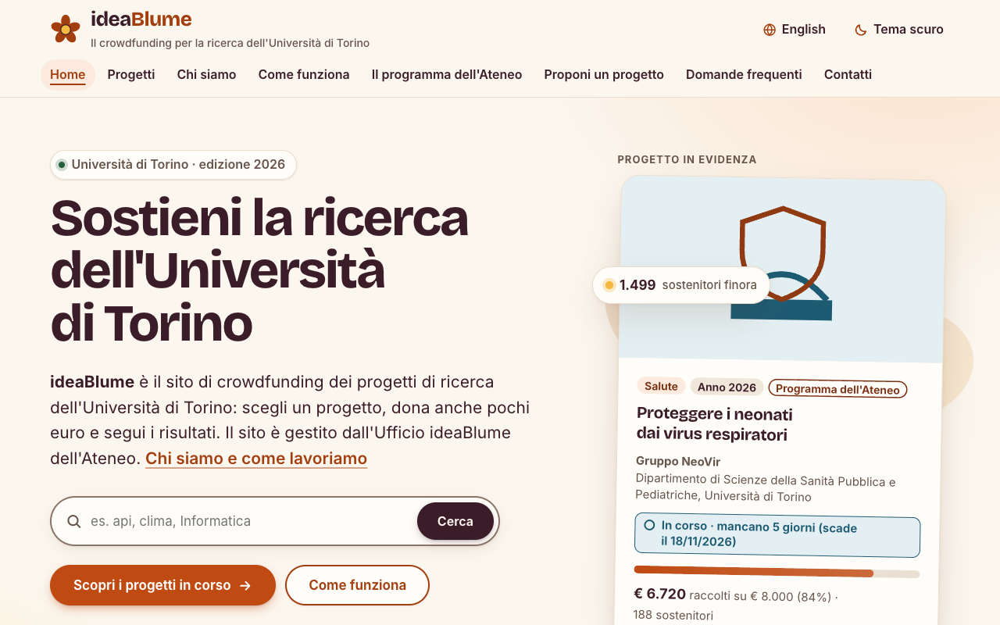

5Risultati quantitativi
5.1 Sintesi per task
| Task | Da soli (S) | Con aiuto (A) | Falliti (F) | Tempo mediano | Tempo min–max | Tempo esperto | Errori | Aiuti | Blocchi | Facilità media |
|---|---|---|---|---|---|---|---|---|---|---|
| T1 · Esplorare le campagne | — | — | — | — | — | — | — | — | — | — |
| T2 · Approfondire un progetto | — | — | — | — | — | — | — | — | — | — |
| T3 · Simulare una donazione | — | — | — | — | — | — | — | — | — | — |
| T4 · Proporre un'idea | — | — | — | — | — | — | — | — | — | — |
I grafici (esito dei task, tempi, errori e SUS) vengono disegnati automaticamente quando dati/sessioni.csv e dati/sus.csv contengono dati.
Commento ai dati, da scrivere dopo le sessioni: quale task ha avuto più insuccessi, dove si concentrano errori e blocchi, quanto i tempi si allontanano da quelli dell'esperto, se la facilità percepita coincide con le prestazioni osservate (spesso non coincide: segnalarlo).
5.2 Risultati per singolo utente e task
Esito: S completato da solo · A completato con un suggerimento · F non completato. La colonna «Facilità» è la risposta alla domanda posta dopo ogni task (1 = molto difficile, 7 = molto facile).
| Utente | Esito | Tempo (min:s) | Errori | Richieste di aiuto | Blocchi | Facilità (1–7) |
|---|---|---|---|---|---|---|
| Utente 1 | — | — | — | — | — | — |
| Utente 2 | — | — | — | — | — | — |
| Utente 3 | — | — | — | — | — | — |
| Utente 4 | — | — | — | — | — | — |
| Utente 5 | — | — | — | — | — | — |
| Utente 6 | — | — | — | — | — | — |
| Utente 7 | — | — | — | — | — | — |
| Utente 8 | — | — | — | — | — | — |
| Utente | Esito | Tempo (min:s) | Errori | Richieste di aiuto | Blocchi | Facilità (1–7) |
|---|---|---|---|---|---|---|
| Utente 1 | — | — | — | — | — | — |
| Utente 2 | — | — | — | — | — | — |
| Utente 3 | — | — | — | — | — | — |
| Utente 4 | — | — | — | — | — | — |
| Utente 5 | — | — | — | — | — | — |
| Utente 6 | — | — | — | — | — | — |
| Utente 7 | — | — | — | — | — | — |
| Utente 8 | — | — | — | — | — | — |
| Utente | Esito | Tempo (min:s) | Errori | Richieste di aiuto | Blocchi | Facilità (1–7) |
|---|---|---|---|---|---|---|
| Utente 1 | — | — | — | — | — | — |
| Utente 2 | — | — | — | — | — | — |
| Utente 3 | — | — | — | — | — | — |
| Utente 4 | — | — | — | — | — | — |
| Utente 5 | — | — | — | — | — | — |
| Utente 6 | — | — | — | — | — | — |
| Utente 7 | — | — | — | — | — | — |
| Utente 8 | — | — | — | — | — | — |
| Utente | Esito | Tempo (min:s) | Errori | Richieste di aiuto | Blocchi | Facilità (1–7) |
|---|---|---|---|---|---|---|
| Utente 1 | — | — | — | — | — | — |
| Utente 2 | — | — | — | — | — | — |
| Utente 3 | — | — | — | — | — | — |
| Utente 4 | — | — | — | — | — | — |
| Utente 5 | — | — | — | — | — | — |
| Utente 6 | — | — | — | — | — | — |
| Utente 7 | — | — | — | — | — | — |
| Utente 8 | — | — | — | — | — | — |
5.3 Quadro per utente
| Utente | T1 | T2 | T3 | T4 | Completati da soli | Tempo totale | Errori | Richieste di aiuto | Blocchi | SUS |
|---|---|---|---|---|---|---|---|---|---|---|
| Utente 1 | — | — | — | — | — | — | — | — | — | — |
| Utente 2 | — | — | — | — | — | — | — | — | — | — |
| Utente 3 | — | — | — | — | — | — | — | — | — | — |
| Utente 4 | — | — | — | — | — | — | — | — | — | — |
| Utente 5 | — | — | — | — | — | — | — | — | — | — |
| Utente 6 | — | — | — | — | — | — | — | — | — | — |
| Utente 7 | — | — | — | — | — | — | — | — | — | — |
| Utente 8 | — | — | — | — | — | — | — | — | — | — |
6Risultati qualitativi
Per ogni utente e per ogni task riportiamo che cosa abbiamo visto (percorso, esitazioni, segni di confusione o frustrazione) e le frasi dette pensando ad alta voce, trascritte dalla scheda dell'osservatore e dalla registrazione.
| Task | Comportamento osservato | Frasi dette |
|---|---|---|
| T1 | — | — |
| T2 | — | — |
| T3 | — | — |
| T4 | — | — |
| Task | Comportamento osservato | Frasi dette |
|---|---|---|
| T1 | — | — |
| T2 | — | — |
| T3 | — | — |
| T4 | — | — |
| Task | Comportamento osservato | Frasi dette |
|---|---|---|
| T1 | — | — |
| T2 | — | — |
| T3 | — | — |
| T4 | — | — |
| Task | Comportamento osservato | Frasi dette |
|---|---|---|
| T1 | — | — |
| T2 | — | — |
| T3 | — | — |
| T4 | — | — |
| Task | Comportamento osservato | Frasi dette |
|---|---|---|
| T1 | — | — |
| T2 | — | — |
| T3 | — | — |
| T4 | — | — |
| Task | Comportamento osservato | Frasi dette |
|---|---|---|
| T1 | — | — |
| T2 | — | — |
| T3 | — | — |
| T4 | — | — |
| Task | Comportamento osservato | Frasi dette |
|---|---|---|
| T1 | — | — |
| T2 | — | — |
| T3 | — | — |
| T4 | — | — |
| Task | Comportamento osservato | Frasi dette |
|---|---|---|
| T1 | — | — |
| T2 | — | — |
| T3 | — | — |
| T4 | — | — |
7Questionario SUS e intervista
7.1 System Usability Scale
Il SUS è un questionario di 10 affermazioni, alternate tra positive e negative, a cui si risponde da 1 («per niente d'accordo») a 5 («del tutto d'accordo»). Il punteggio va da 0 a 100: per le affermazioni dispari si sottrae 1 alla risposta, per le pari si sottrae la risposta da 5, e la somma si moltiplica per 2,5. Non è una percentuale: il valore medio rilevato in letteratura è 68 (Sauro, 2011) e i punteggi sopra 80 corrispondono a un giudizio «eccellente» (Bangor et al., 2009).
| Utente | 1 | 2 | 3 | 4 | 5 | 6 | 7 | 8 | 9 | 10 | Punteggio |
|---|---|---|---|---|---|---|---|---|---|---|---|
| Utente 1 | — | — | — | — | — | — | — | — | — | — | — |
| Utente 2 | — | — | — | — | — | — | — | — | — | — | — |
| Utente 3 | — | — | — | — | — | — | — | — | — | — | — |
| Utente 4 | — | — | — | — | — | — | — | — | — | — | — |
| Utente 5 | — | — | — | — | — | — | — | — | — | — | — |
| Utente 6 | — | — | — | — | — | — | — | — | — | — | — |
| Utente 7 | — | — | — | — | — | — | — | — | — | — | — |
| Utente 8 | — | — | — | — | — | — | — | — | — | — | — |
Il punteggio medio e il commento compaiono quando tutte le risposte al SUS sono inserite.
7.2 Intervista finale
| Utente | Che cosa è piaciuto | Che cosa non è piaciuto | Che cosa cambierebbe | Altro (fiducia, cose non trovate) |
|---|---|---|---|---|
| Utente 1 | — | — | — | — |
| Utente 2 | — | — | — | — |
| Utente 3 | — | — | — | — |
| Utente 4 | — | — | — | — |
| Utente 5 | — | — | — | — |
| Utente 6 | — | — | — | — |
| Utente 7 | — | — | — | — |
| Utente 8 | — | — | — | — |
Sintesi dell'intervista: temi ricorrenti, su che cosa gli utenti concordano, dove il giudizio a parole contrasta con ciò che abbiamo osservato.
8Problemi emersi e classificazione
I problemi di questa sezione hanno due origini, indicate nella tabella 14.
- ispezione Ispezione dei percorsi. Preparando i task abbiamo eseguito i quattro percorsi sulla versione poi provata dagli utenti, a 1280 × 800 px (computer) e a 375 × 740 px (telefono), e per ogni passaggio ci siamo chiesti: l'informazione che serve è visibile senza interagire? Sta nella prima schermata? Qualcosa esce dallo schermo? Il sito dice in tempo quanto si paga e a chi è rivolto un modulo? Ogni risposta negativa è stata misurata con uno script (
relazione/tools/prima_dopo.py) e annotata come ipotesi nella scheda dell'osservatore. - test Sessioni con gli utenti. Dopo l'ultima sessione abbiamo fatto una riunione di sintesi, come suggerisce Krug: ognuno ha elencato i tre problemi più gravi visti nelle proprie sessioni, poi abbiamo unito i doppioni. Per ogni ipotesi dell'ispezione abbiamo segnato quali utenti l'hanno incontrata davvero e con quali conseguenze; i comportamenti che l'ispezione non aveva previsto sono entrati nell'elenco con origine «test».
Un'ipotesi che nessun utente ha incontrato non viene cancellata, ma la sua gravità scende: l'ispezione dice che un difetto esiste, solo le sessioni dicono quanto pesa. Finché la colonna «Utenti» è vuota la gravità è una stima, e come tale è indicata.
La gravità segue la scala di Nielsen da 0 a 4 e combina tre fattori:
- frequenza: quanti utenti su 8 lo hanno incontrato;
- impatto: 1 = rallenta o infastidisce, 2 = causa errori o richieste di aiuto, 3 = impedisce di completare il task o fa completare la cosa sbagliata senza accorgersene;
- persistenza: 1 = si supera una volta e non torna, 2 = torna in più punti del percorso, 3 = l'utente non impara a evitarlo.
| Grado | Significato | Che cosa ne facciamo |
|---|---|---|
| 4 · catastrofe | Impedisce di completare un percorso chiave a più utenti | Da correggere subito |
| 3 · grave | Causa errori, aiuti o insuccessi; molti utenti coinvolti | Da correggere in questo re-design |
| 2 · minore | Rallenta o confonde, ma l'utente ne esce da solo | Da correggere se il costo è basso |
| 1 · cosmetico | Fastidio estetico o di formulazione, senza effetti sul task | Solo se resta tempo |
| 0 · non è un problema | Osservato una volta, senza conseguenze, legato alla situazione di test | Annotato e non corretto |
| N. | Problema | Task | Origine | Utenti che lo hanno incontrato | Frequenza | Impatto | Persistenza | Gravità |
|---|---|---|---|---|---|---|---|---|
| P1 | Su telefono il riepilogo della donazione esce dallo schermo | T3 | ispezione | — | da rilevare | 2 | 3 | 3 · grave (stima) |
| P2 | Il costo totale si scopre solo all'ultimo passo | T3 | ispezione | — | da rilevare | 2 | 2 | 3 · grave (stima) |
| P3 | La regola «tutto o niente» è nascosta dietro un pulsante | T2 | ispezione | — | da rilevare | 2 | 2 | 3 · grave (stima) |
| P6 | I moduli per chi propone non dicono a chi sono riservati | T4 | ispezione | — | da rilevare | 3 | 1 | 3 · grave (stima) |
| P4 | Nelle schede la percentuale raggiunta si legge a fatica | T1 | ispezione | — | da rilevare | 1 | 2 | 2 · minore (stima) |
| P5 | Nell'elenco dei progetti i filtri occupano la prima schermata | T1 | ispezione | — | da rilevare | 1 | 2 | 2 · minore (stima) |
| P7 | Su telefono titolo e indicatore dei passi spingono in basso il modulo di donazione | T3 | ispezione | — | da rilevare | 1 | 3 | 1 · cosmetico (stima) |
| P8 | Messaggio d'errore generico per l'email mancante | T3, T4 | ispezione | — | da rilevare | 1 | 1 | 1 · cosmetico (stima) |
I problemi uno per uno
P1 · Su telefono il riepilogo della donazione esce dallo schermo
A 375 px di larghezza, nel passo «Controlla e conferma» e nella pagina di conferma i valori del riepilogo (progetto, ricompensa, email) escono dal riquadro e la pagina scorre in orizzontale. È il punto in cui si controlla il totale prima di pagare. I controlli automatici dell'Assignment 3 non lo avevano segnalato perché aprivano le pagine così come si caricano: il quinto passo è costruito dallo script con i dati inseriti e, con un'email lunga, la colonna dei valori non si restringe.
Misura sulla versione provata. Pagina larga 416 px su uno schermo di 375; 8 valori su 8 escono dal riquadro (succede anche a 320 px).
Che cosa è successo nelle sessioni. Da scrivere: quali utenti lo hanno incontrato, che cosa hanno fatto e detto, con quali conseguenze (errori, aiuti, tempo). Se nessuno lo ha incontrato, dirlo e abbassare la gravità.
P2 · Il costo totale si scopre solo all'ultimo passo
Chi dona legge la commissione del pagamento per la prima volta al passo 4 e il totale da pagare solo al passo 5, dopo aver già inserito i propri dati. Nei primi tre passi nulla dice che all'importo scelto si aggiunge una commissione. Il progetto dell'Assignment 2 prevedeva un riepilogo «sempre visibile», ma nella versione consegnata il riquadro era nascosto e, su schermi larghi, metà della pagina restava vuota.
Misura sulla versione provata. Commissione leggibile dal passo 4, totale dal passo 5 su 5.
Che cosa è successo nelle sessioni. Da scrivere: quali utenti lo hanno incontrato, che cosa hanno fatto e detto, con quali conseguenze (errori, aiuti, tempo). Se nessuno lo ha incontrato, dirlo e abbassare la gravità.
P3 · La regola «tutto o niente» è nascosta dietro un pulsante
Nella pagina di un progetto la risposta alla domanda «che cosa succede ai miei soldi se l'obiettivo non viene raggiunto?» non è scritta: compare solo premendo il pulsante «Che cosa significa “tutto o niente”?», in fondo al riquadro sul raddoppio dell'Ateneo. Chi non conosce l'espressione non ha motivo di premerlo, e la cerca altrove (domande frequenti, «Come funziona»).
Misura sulla versione provata. Frase sulla restituzione leggibile senza interagire: no (serve 1 clic su un pulsante che non la nomina).
Che cosa è successo nelle sessioni. Da scrivere: quali utenti lo hanno incontrato, che cosa hanno fatto e detto, con quali conseguenze (errori, aiuti, tempo). Se nessuno lo ha incontrato, dirlo e abbassare la gravità.
P6 · I moduli per chi propone non dicono a chi sono riservati
La candidatura al programma è riservata a chi fa ricerca all'Università di Torino, ma la pagina non lo diceva: chi rappresenta un'associazione e ci arriva dal piè di pagina («Candidatura al programma») o dalla ricerca se ne accorge solo al campo «Email istituzionale». Il modulo di collaborazione, al contrario, non rimandava alla candidatura. In «Contatti» l'argomento «Proporre un progetto» portava a scrivere un messaggio generico invece che al modulo giusto.
Misura sulla versione provata. Rimando al modulo giusto prima dei campi: assente nella candidatura, nella collaborazione e in «Contatti».
Che cosa è successo nelle sessioni. Da scrivere: quali utenti lo hanno incontrato, che cosa hanno fatto e detto, con quali conseguenze (errori, aiuti, tempo). Se nessuno lo ha incontrato, dirlo e abbassare la gravità.
P4 · Nelle schede la percentuale raggiunta si legge a fatica
Per confrontare le campagne servono la barra e la percentuale raggiunta. Nelle schede la percentuale era in coda alla riga delle cifre, tra parentesi, in grigio e a 15 px, mentre la barra non aveva alcun numero accanto: per capire quale campagna è più indietro bisognava leggere una riga di testo per ogni scheda.
Misura sulla versione provata. Percentuale a 15 px, peso 400, tra parentesi in coda alla riga delle cifre.
Che cosa è successo nelle sessioni. Da scrivere: quali utenti lo hanno incontrato, che cosa hanno fatto e detto, con quali conseguenze (errori, aiuti, tempo). Se nessuno lo ha incontrato, dirlo e abbassare la gravità.
P5 · Nell'elenco dei progetti i filtri occupano la prima schermata
Aprendo «Progetti» su telefono si vedono solo la ricerca e sei menu a tendina: nessun progetto comincia nella prima schermata. Su computer (1280 × 800) delle schede si vede soltanto il bordo superiore. «Ordina per», che serve a confrontare le campagne, era l'ultimo dei sei menu.
Misura sulla versione provata. Prima scheda a 1047 px su telefono (schermo alto 740) e a 758 px su computer (schermo alto 800).
Che cosa è successo nelle sessioni. Da scrivere: quali utenti lo hanno incontrato, che cosa hanno fatto e detto, con quali conseguenze (errori, aiuti, tempo). Se nessuno lo ha incontrato, dirlo e abbassare la gravità.
P7 · Su telefono titolo e indicatore dei passi spingono in basso il modulo di donazione
A 375 px il titolo con il nome completo del progetto occupa 4 righe e l'indicatore dei cinque passi altre tre: la prima scelta del modulo comincia a 636 px, quasi in fondo alla prima schermata.
Misura sulla versione provata. Titolo su 4 righe, indicatore alto 136 px, prima scelta a 636 px.
Che cosa è successo nelle sessioni. Da scrivere: quali utenti lo hanno incontrato, che cosa hanno fatto e detto, con quali conseguenze (errori, aiuti, tempo). Se nessuno lo ha incontrato, dirlo e abbassare la gravità.
P8 · Messaggio d'errore generico per l'email mancante
Lasciando vuoti i campi del passo 2, nome e cognome hanno un messaggio che dice che cosa fare («Scrivi il tuo nome.»), l'email il generico «Compila questo campo.». Lo stesso accadeva in tutti gli altri moduli del sito.
Misura sulla versione provata. Email vuota: «Compila questo campo.»
Che cosa è successo nelle sessioni. Da scrivere: quali utenti lo hanno incontrato, che cosa hanno fatto e detto, con quali conseguenze (errori, aiuti, tempo). Se nessuno lo ha incontrato, dirlo e abbassare la gravità.
Che cosa ha funzionato
Due o tre cose che gli utenti hanno usato senza esitare (con il riferimento a utenti e task): servono a decidere che cosa non toccare nel re-design.
9Re-design
Abbiamo corretto il prototipo partendo dai problemi più gravi. Per ogni intervento indichiamo il problema da cui nasce, il tipo di modifica (contenuti, architettura dell'informazione, layout, feedback), i file toccati e la stessa misura rilevata prima e dopo, con le schermate delle due versioni. Le schermate e le misure sono prodotte dallo stesso script sulle due versioni del sito, quindi sono confrontabili e ripetibili.
Le pagine sono generate da assignment2/website/tools/build.py a partire dai testi in i18n/ e dai dati in data/: ogni modifica vale sia per la versione italiana sia per quella inglese, e per il tema chiaro e scuro. Dopo le modifiche abbiamo rieseguito tutte le verifiche automatiche del sito:
- i quattro task restano completabili con il percorso più breve, prima e dopo (
pilota.js); - accessibilità: 0 violazioni axe-core (WCAG 2.2 A e AA) sulle 50 pagine, in entrambi i temi; contrasti conformi in 91 coppie di colori per tema;
- percorsi da tastiera e interazioni: 105 controlli su 105; nessuno scorrimento orizzontale a 320, 375, 768 e 1280 px; nessun bersaglio sotto 24 px;
- coerenza dei dati (329 controlli) e dei collegamenti interni (1.710 link, 0 problemi).
Il re-design è pubblicato a un indirizzo diverso da quello della versione provata (entrambi in copertina), così le due versioni restano confrontabili.
| Problema | Gravità | Tipo di intervento | Prima | Dopo |
|---|---|---|---|---|
| P1 · Su telefono il riepilogo della donazione esce dallo schermo | 3 · grave (stima) | Layout | Pagina larga 416 px su uno schermo di 375; 8 valori su 8 escono dal riquadro (succede anche a 320 px). | Pagina larga 375 px; 0 valori fuori dal riquadro, a 375 e a 320 px, nel passo 5 e nella conferma. |
| P2 · Il costo totale si scopre solo all'ultimo passo | 3 · grave (stima) | Layout e feedback | Commissione leggibile dal passo 4, totale dal passo 5 su 5. | Commissione e totale leggibili dal passo 1, e in ogni passo successivo. |
| P3 · La regola «tutto o niente» è nascosta dietro un pulsante | 3 · grave (stima) | Contenuti | Frase sulla restituzione leggibile senza interagire: no (serve 1 clic su un pulsante che non la nomina). | Frase sulla restituzione leggibile senza interagire: sì (0 clic), subito sotto il pulsante per donare. |
| P6 · I moduli per chi propone non dicono a chi sono riservati | 3 · grave (stima) | Contenuti e feedback | Rimando al modulo giusto prima dei campi: assente nella candidatura, nella collaborazione e in «Contatti». | Rimando al modulo giusto prima dei campi: presente in tutti e tre i punti. |
| P4 · Nelle schede la percentuale raggiunta si legge a fatica | 2 · minore (stima) | Layout | Percentuale a 15 px, peso 400, tra parentesi in coda alla riga delle cifre. | Percentuale a 18 px, peso 700, accanto alla barra. |
| P5 · Nell'elenco dei progetti i filtri occupano la prima schermata | 2 · minore (stima) | Architettura dell'informazione e layout | Prima scheda a 1047 px su telefono (schermo alto 740) e a 758 px su computer (schermo alto 800). | Prima scheda a 583 px su telefono e a 577 px su computer: i progetti cominciano nella prima schermata. |
| P7 · Su telefono titolo e indicatore dei passi spingono in basso il modulo di donazione | 1 · cosmetico (stima) | Layout | Titolo su 4 righe, indicatore alto 136 px, prima scelta a 636 px. | Titolo su 2 righe, indicatore alto 40 px, prima scelta a 607 px, compresa la nuova striscia con commissione e totale (P2). |
| P8 · Messaggio d'errore generico per l'email mancante | 1 · cosmetico (stima) | Feedback | Email vuota: «Compila questo campo.» | Email vuota: «Scrivi la tua email.» |
P1 · Su telefono il riepilogo della donazione esce dallo schermo
Pagina larga 416 px su uno schermo di 375; 8 valori su 8 escono dal riquadro (succede anche a 320 px).
Le colonne del riepilogo possono restringersi e i valori lunghi vanno a capo. Sotto 480 px etichetta e valore stanno uno sopra l'altro, con il totale più grande. La stessa regola vale per i riepiloghi dei moduli di candidatura e di collaborazione.
Pagina larga 375 px; 0 valori fuori dal riquadro, a 375 e a 320 px, nel passo 5 e nella conferma.
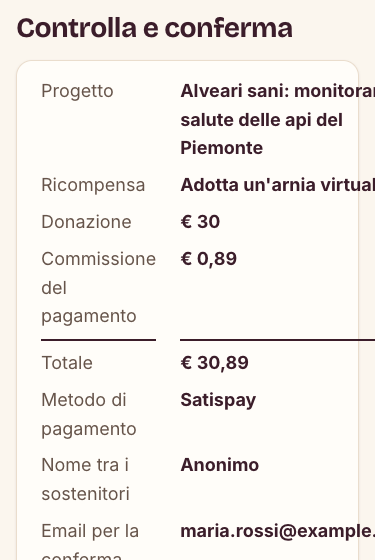
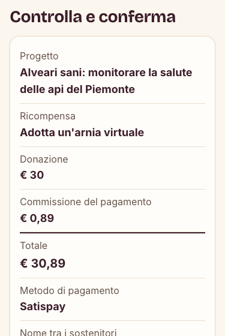
P2 · Il costo totale si scopre solo all'ultimo passo
Commissione leggibile dal passo 4, totale dal passo 5 su 5.
Nuovo riquadro «La tua donazione», sempre visibile: donazione, commissione e totale si aggiornano a ogni scelta. Finché il metodo di pagamento non è scelto mostra l'intervallo possibile (per € 30: da € 30 a € 30,89), poi la cifra esatta. Su schermi larghi è una colonna a destra che resta in vista scorrendo; su telefono è una striscia sotto l'indicatore dei passi. Al passo 1 una frase avvisa della commissione; al passo 4 ogni metodo mostra anche il totale.
Commissione e totale leggibili dal passo 1, e in ogni passo successivo.
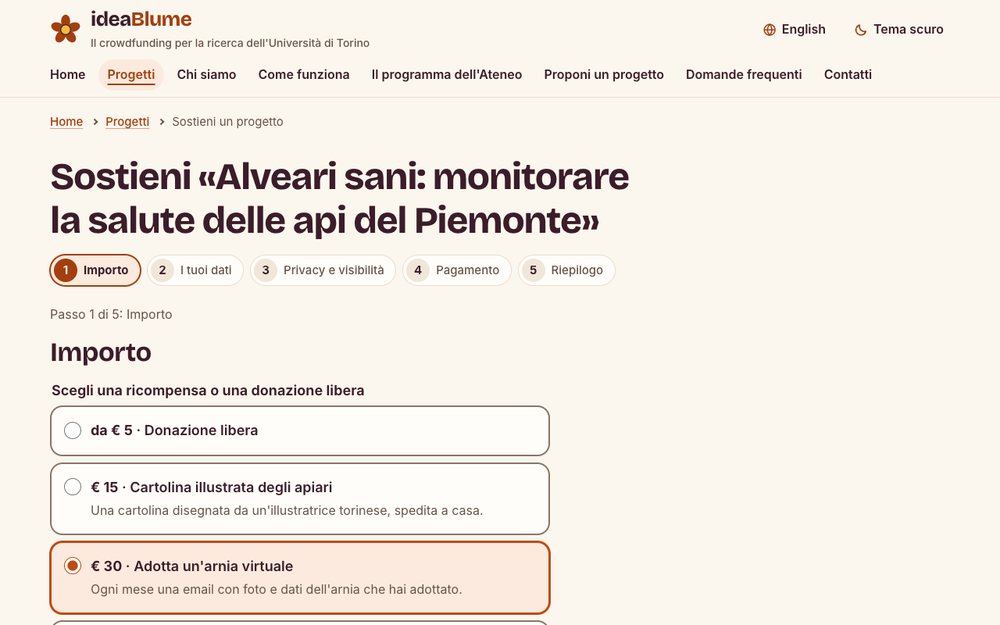
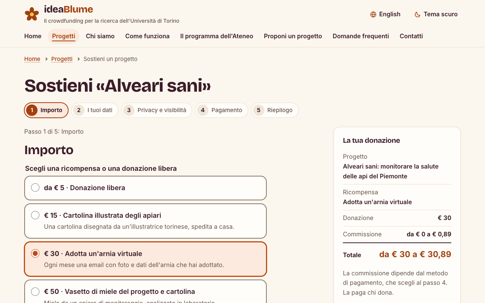
P3 · La regola «tutto o niente» è nascosta dietro un pulsante
Frase sulla restituzione leggibile senza interagire: no (serve 1 clic su un pulsante che non la nomina).
Sotto il pulsante «Sostieni il progetto» c'è una frase sempre visibile: «Regola “tutto o niente”: se alla scadenza l'obiettivo non è raggiunto, ti restituiamo la donazione». Per le campagne che hanno già raggiunto l'obiettivo la frase dice invece che la donazione va al progetto. La spiegazione a comparsa resta per chi vuole approfondire.
Frase sulla restituzione leggibile senza interagire: sì (0 clic), subito sotto il pulsante per donare.
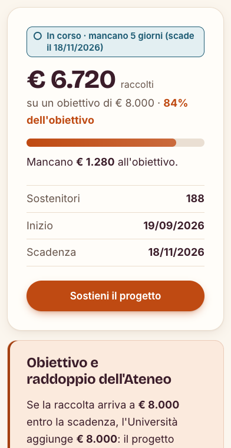
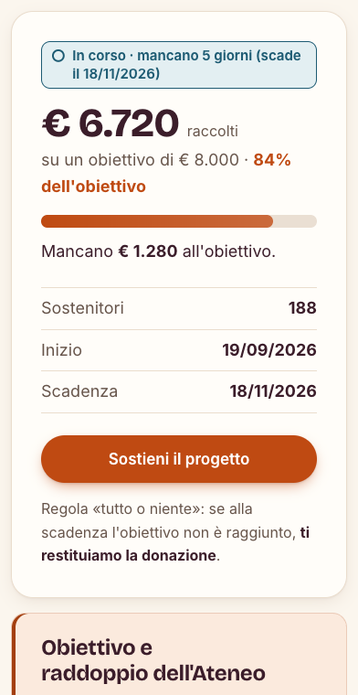
P6 · I moduli per chi propone non dicono a chi sono riservati
Rimando al modulo giusto prima dei campi: assente nella candidatura, nella collaborazione e in «Contatti».
In testa alla candidatura un avviso «Per chi è questo modulo» con il collegamento al modulo di collaborazione, e viceversa. Nel modulo di collaborazione il tempo di risposta (10 giorni lavorativi) è scritto prima dei campi. In «Contatti», scegliendo l'argomento «Proporre un progetto», compare un suggerimento con i due moduli.
Rimando al modulo giusto prima dei campi: presente in tutti e tre i punti.
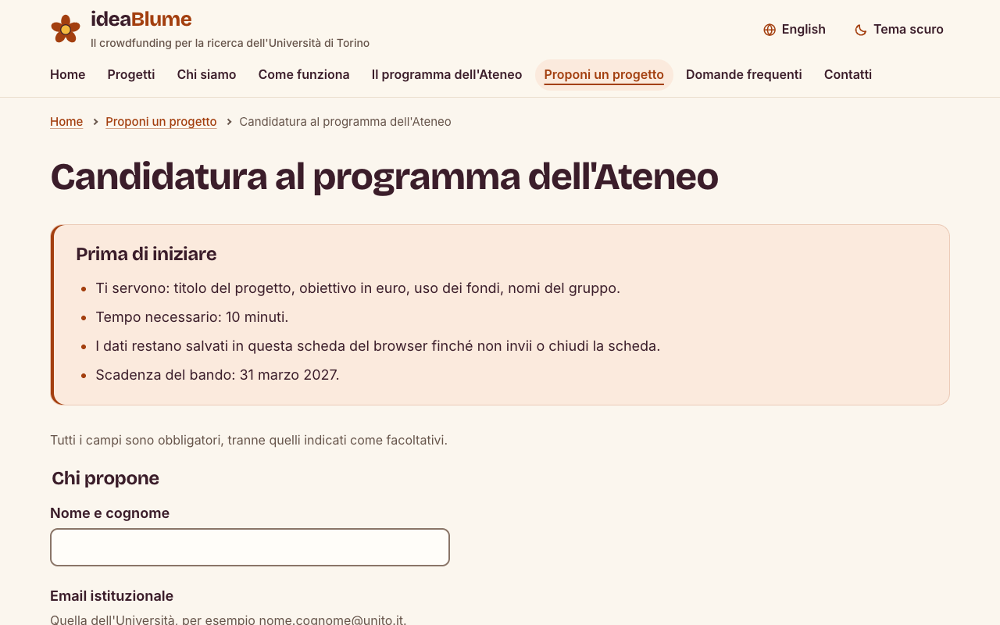
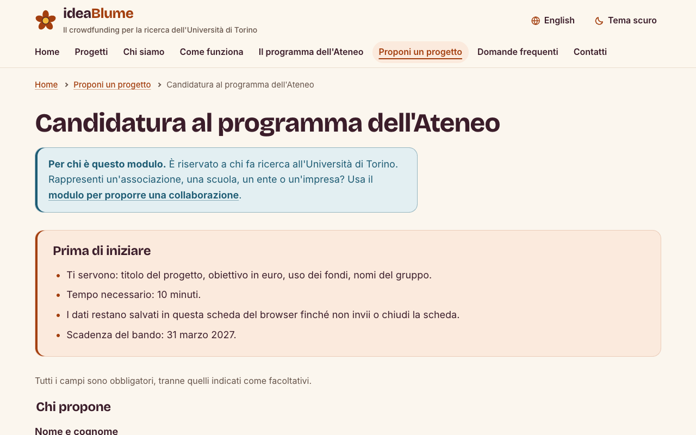
P4 · Nelle schede la percentuale raggiunta si legge a fatica
Percentuale a 15 px, peso 400, tra parentesi in coda alla riga delle cifre.
La percentuale è accanto alla barra, più grande e in grassetto; la riga sotto resta per le cifre in euro e per i sostenitori. Per chi usa uno screen reader la percentuale è seguita dalle parole «dell'obiettivo».
Percentuale a 18 px, peso 700, accanto alla barra.
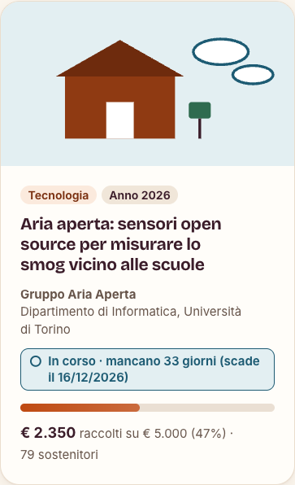
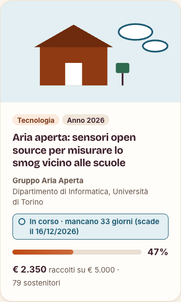
P5 · Nell'elenco dei progetti i filtri occupano la prima schermata
Prima scheda a 1047 px su telefono (schermo alto 740) e a 758 px su computer (schermo alto 800).
Ricerca e «Ordina per» sono sempre visibili sulla prima riga. Gli altri cinque filtri stanno su una sola riga su computer; su telefono si aprono con il pulsante «Filtri», che dice quanti sono attivi. Senza JavaScript restano tutti visibili.
Prima scheda a 583 px su telefono e a 577 px su computer: i progetti cominciano nella prima schermata.
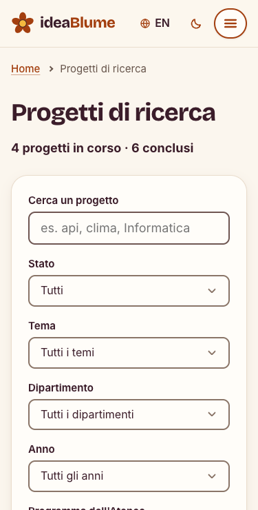
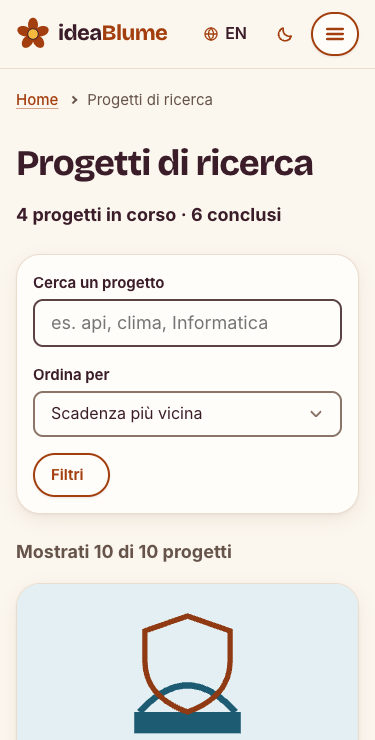
P7 · Su telefono titolo e indicatore dei passi spingono in basso il modulo di donazione
Titolo su 4 righe, indicatore alto 136 px, prima scelta a 636 px.
Su schermi stretti l'indicatore sta su una riga: è scritto solo il nome del passo corrente, gli altri passi sono cerchi con il numero o la spunta (il testo resta per le tecnologie assistive). Il titolo usa il nome breve del progetto; quello completo è nel riquadro «La tua donazione». Lo spazio recuperato ospita la striscia con commissione e totale.
Titolo su 2 righe, indicatore alto 40 px, prima scelta a 607 px, compresa la nuova striscia con commissione e totale (P2).
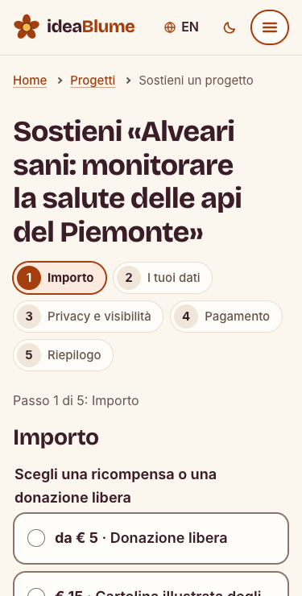
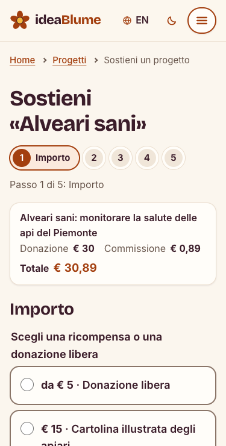
P8 · Messaggio d'errore generico per l'email mancante
Email vuota: «Compila questo campo.»
Messaggio specifico per l'email mancante, coerente con quelli degli altri campi, in tutti i moduli e nelle due lingue.
Email vuota: «Scrivi la tua email.»
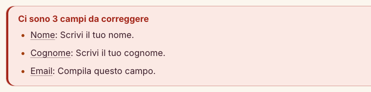
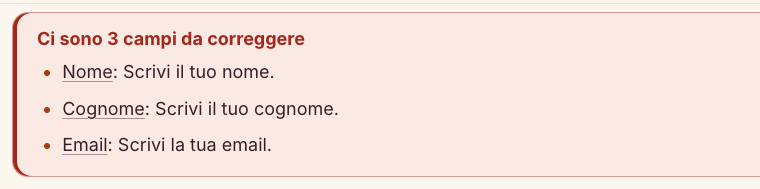
Problemi non corretti
Tutti i problemi della tabella 14 sono stati corretti. Se dalle sessioni emergono altri problemi, aggiungerli a problemi.csv con origine «test»: quelli non corretti compaiono qui con il motivo.
10Limiti dello studio e conclusioni
Limiti
- Campione piccolo e di convenienza. Otto persone raggiunte tramite le nostre conoscenze: bastano a far emergere i problemi più frequenti, non a stimare quanto siano diffusi.
- Ordine dei task fisso. Chi arriva al terzo task conosce già il sito: i tempi di T3 e T4 possono essere migliori di quelli di un primo contatto.
- Pensare ad alta voce rallenta. I tempi misurati sono più lunghi di quelli d'uso reale e vanno letti come confronto tra task e tra utenti, non come valori assoluti.
- Situazione artificiale. Dati di fantasia, pagamento simulato, una persona seduta accanto: nessuno ha rischiato denaro proprio, quindi fiducia e abbandono del pagamento sono sottostimati.
- Osservatori coinvolti. Chi ha osservato ha anche progettato il sito. Abbiamo ridotto il rischio con regole di conteggio scritte prima e con il controllo sulla registrazione.
- Re-design verificato con misure, non con nuovi utenti. Sappiamo che dopo le modifiche il riepilogo non esce più dallo schermo o che il totale si legge dal primo passo; non sappiamo ancora se le persone se ne accorgono. Il passo successivo sarebbe un secondo giro di test, anche con tre sole persone.
- Ispezione fatta da chi ha progettato il sito. Chi conosce un'interfaccia fatica a vederne i difetti: per questo l'ispezione produce ipotesi e non conclusioni, e la gravità definitiva dipende da ciò che è successo nelle sessioni.
Conclusioni
Da scrivere dopo l'analisi: i due o tre risultati principali, che cosa il test ha mostrato che valutazione euristica, personas e strumenti automatici non avevano fatto emergere, che cosa rifaremmo in modo diverso.
Uso dell'intelligenza artificiale
Abbiamo usato un assistente basato su IA (Claude Code) per preparare i materiali del test (copione, cartoncini, scheda dell'osservatore), per scrivere gli script che calcolano tabelle, punteggi SUS e grafici a partire dai nostri file di dati, per l'ispezione dei quattro percorsi con le misure e le schermate prima/dopo, e per applicare al codice del prototipo le modifiche del re-design, che abbiamo rivisto e approvato una per una. Le sessioni con gli utenti, la rilevazione delle misure, la trascrizione delle osservazioni, la scelta e la classificazione dei problemi sono opera del gruppo. Adattare a ciò che è stato fatto davvero.
AAppendice · Materiali del test
Il kit completo usato nelle sessioni (copione del facilitatore, consenso, questionario iniziale, cartoncini, scheda dell'osservatore, SUS, intervista) è nel file kit/kit_test.pdf allegato al prototipo. Qui riportiamo le parti che servono a leggere i risultati.
A.1 Introduzione letta a ogni utente (estratto)
Stiamo provando il sito, non te. Qui non puoi sbagliare niente: se qualcosa non funziona o non si capisce, è proprio quello che ci serve sapere. Mentre usi il sito ti chiedo di pensare ad alta voce: dimmi che cosa guardi, che cosa cerchi, che cosa ti aspetti, che cosa ti sorprende. Ad alcune domande non potrò rispondere subito, perché ci interessa vedere che cosa fanno le persone quando non hanno nessuno accanto.
A.2 Affermazioni del SUS (versione italiana usata)
- Penso che mi piacerebbe usare questo sito frequentemente.
- Ho trovato il sito inutilmente complesso.
- Ho trovato il sito facile da usare.
- Penso che avrei bisogno dell'aiuto di una persona esperta per usare questo sito.
- Ho trovato le varie funzioni del sito ben integrate.
- Ho trovato troppe incoerenze nel sito.
- Penso che la maggior parte delle persone imparerebbe a usare questo sito molto rapidamente.
- Ho trovato il sito molto macchinoso da usare.
- Mi sono sentito/a molto sicuro/a nell'usare il sito.
- Ho dovuto imparare molte cose prima di riuscire a usare il sito.
A.3 Domande dell'intervista
- Che cosa ti è piaciuto di più del sito?
- Qual è stata la cosa più difficile o fastidiosa?
- Se potessi cambiare una sola cosa, quale cambieresti?
- Ti fideresti a donare davvero su un sito così? Che cosa ti farebbe fidare di più?
- C'è qualcosa che ti aspettavi di trovare e non hai trovato?
A.4 Dati grezzi
Tutti i valori di questa relazione sono calcolati dai file CSV nella cartella assignment4/dati/ del repository (partecipanti, sessioni, sus, intervista, problemi) con lo script relazione/tools/genera.py.